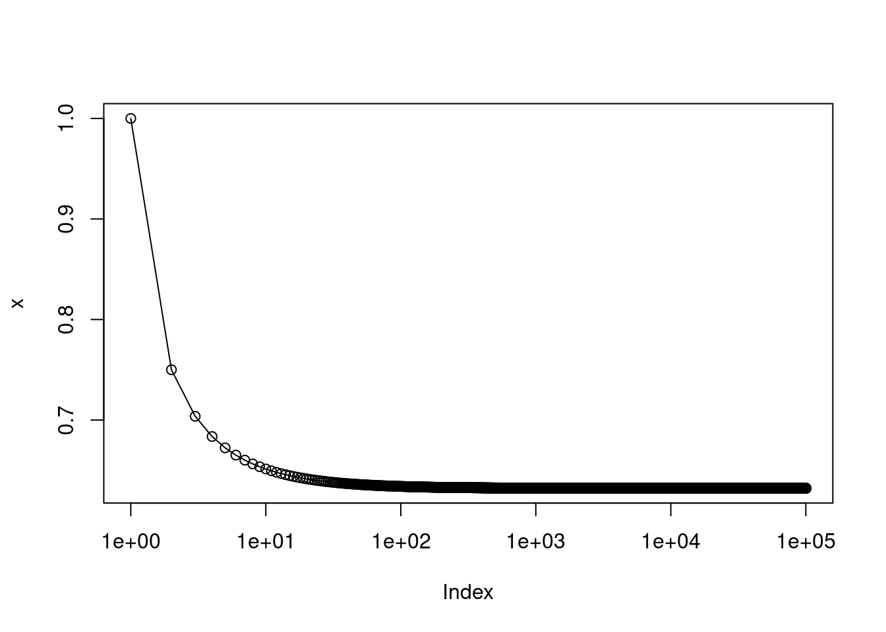

5 Resampling Methods
5.1 Conceptual
5.1.1 Question 1
Using basic statistical properties of the variance, as well as single- variable calculus, derive (5.6). In other words, prove that \(\alpha\) given by (5.6) does indeed minimize \(Var(\alpha X + (1 − \alpha)Y)\).
Equation 5.6 is:
\[ \alpha = \frac{\sigma^2_Y - \sigma_{XY}}{\sigma^2_X + \sigma^2_Y - 2\sigma_{XY}} \]
Remember that:
\[ Var(aX) = a^2Var(X), \\ \mathrm{Var}(X + Y) = \mathrm{Var}(X) + \mathrm{Var}(Y) + \mathrm{Cov}(X,Y), \\ \mathrm{Cov}(aX, bY) = ab\mathrm{Cov}(X, Y) \]
If we define \(\sigma^2_X = \mathrm{Var}(X)\), \(\sigma^2_Y = \mathrm{Var}(Y)\) and \(\sigma_{XY} = \mathrm{Cov}(X, Y)\)
\[\begin{align} Var(\alpha X + (1 - \alpha)Y) &= \alpha^2\sigma^2_X + (1-\alpha)^2\sigma^2_Y + 2\alpha(1 - \alpha)\sigma_{XY} \\ &= \alpha^2\sigma^2_X + \sigma^2_Y - 2\alpha\sigma^2_Y + \alpha^2\sigma^2_Y + 2\alpha\sigma_{XY} - 2\alpha^2\sigma_{XY} \end{align}\]
Now we want to find when the rate of change of this function is 0 with respect to \(\alpha\), so we compute the partial derivative, set to 0 and solve.
\[ \frac{\partial}{\partial{\alpha}} = 2\alpha\sigma^2_X - 2\sigma^2_Y + 2\alpha\sigma^2_Y + 2\sigma_{XY} - 4\alpha\sigma_{XY} = 0 \]
Moving \(\alpha\) terms to the same side:
\[ \alpha\sigma^2_X + \alpha\sigma^2_Y - 2\alpha\sigma_{XY} = \sigma^2_Y - \sigma_{XY} \]
\[ \alpha = \frac{\sigma^2_Y - \sigma_{XY}}{\sigma^2_X + \sigma^2_Y - 2\sigma_{XY}} \]
We should also show that this is a minimum, so that the second partial derivative wrt \(\alpha\) is \(>= 0\).
\[\begin{align} \frac{\partial^2}{\partial{\alpha^2}} &= 2\sigma^2_X + 2\sigma^2_Y - 4\sigma_{XY} \\ &= 2(\sigma^2_X + \sigma^2_Y - 2\sigma_{XY}) \\ &= 2\mathrm{Var}(X - Y) \end{align}\]
Since variance is positive, then this must be positive.
5.1.2 Question 2
We will now derive the probability that a given observation is part of a bootstrap sample. Suppose that we obtain a bootstrap sample from a set of n observations.
- What is the probability that the first bootstrap observation is not the \(j\)th observation from the original sample? Justify your answer.
This is 1 - probability that it is the \(j\)th = \(1 - 1/n\).
- What is the probability that the second bootstrap observation is not the \(j\)th observation from the original sample?
Since each bootstrap observation is a random sample, this probability is the same (\(1 - 1/n\)).
- Argue that the probability that the \(j\)th observation is not in the bootstrap sample is \((1 − 1/n)^n\).
For the \(j\)th observation to not be in the sample, it would have to not be picked for each of \(n\) positions, so not picked for \(1, 2, ..., n\), thus the probability is \((1 - 1/n)^n\)
- When \(n = 5\), what is the probability that the \(j\)th observation is in the bootstrap sample?
## [1] 0.67232\(p = 0.67\)
- When \(n = 100\), what is the probability that the \(j\)th observation is in the bootstrap sample?
## [1] 0.6339677\(p = 0.64\)
- When \(n = 10,000\), what is the probability that the \(j\)th observation is in the bootstrap sample?
## [1] 0.6321224\(p = 0.63\)
- Create a plot that displays, for each integer value of \(n\) from 1 to 100,000, the probability that the \(j\)th observation is in the bootstrap sample. Comment on what you observe.

The probability rapidly approaches 0.63 with increasing \(n\).
Note that \[e^x = \lim_{x \to \inf} \left(1 + \frac{x}{n}\right)^n,\] so with \(x = -1\), we can see that our limit is \(1 - e^{-1} = 1 - 1/e\).
We will now investigate numerically the probability that a bootstrap sample of size \(n = 100\) contains the \(j\)th observation. Here \(j = 4\). We repeatedly create bootstrap samples, and each time we record whether or not the fourth observation is contained in the bootstrap sample.
> store <- rep (NA, 10000) > for (i in 1:10000) { store[i] <- sum(sample(1:100, rep = TRUE) == 4) > 0 } > mean(store)Comment on the results obtained.
## [1] 0.6317The probability of including \(4\) when resampling numbers \(1...100\) is close to \(1 - (1 - 1/100)^{100}\).
5.1.3 Question 3
- We now review \(k\)-fold cross-validation.
- Explain how \(k\)-fold cross-validation is implemented.
We divided our data into (approximately equal) \(k\) subsets, and then generate predictions for each \(k\)th set, training on the exclusive \(k\) sets combined.
- What are the advantages and disadvantages of \(k\)-fold cross-validation relative to:
- The validation set approach?
- LOOCV?
When using a validation set, we can only train on a small portion of the data as we must reserve the rest for validation. As a result it can overestimate the test error rate (assuming we then train using the complete data for future prediction). It is also sensitive to which observations are including in train vs. test. It is, however, low cost in terms of processing time (as we only have to fit one model).
When using LOOCV, we can train on \(n-1\) observations, however, the trained models we generate each differ only by the inclusion (and exclusion) of a single observation. As a result, LOOCV can have high variance (the models fit will be similar, and might be quite different to what we would obtain with a different data set). LOOCV is also costly in terms of processing time.
5.1.4 Question 4
Suppose that we use some statistical learning method to make a prediction for the response \(Y\) for a particular value of the predictor \(X\). Carefully describe how we might estimate the standard deviation of our prediction.
We could address this with bootstrapping. Our procedure would be to (jointly) resample \(Y\) and \(X\) variables and fit our model many times. For each model we could obtain a summary of our prediction and calculate the standard deviation over bootstrapped samples.
5.2 Applied
5.2.1 Question 5
In Chapter 4, we used logistic regression to predict the probability of
defaultusingincomeandbalanceon theDefaultdata set. We will now estimate the test error of this logistic regression model using the validation set approach. Do not forget to set a random seed before beginning your analysis.
- Fit a logistic regression model that uses
incomeandbalanceto predictdefault.
library(ISLR2)
set.seed(42)
fit <- glm(default ~ income + balance, data = Default, family = "binomial")
- Using the validation set approach, estimate the test error of this model. In order to do this, you must perform the following steps:
- Split the sample set into a training set and a validation set.
- Fit a multiple logistic regression model using only the training observations.
- Obtain a prediction of default status for each individual in the validation set by computing the posterior probability of default for that individual, and classifying the individual to the
defaultcategory if the posterior probability is greater than 0.5.- Compute the validation set error, which is the fraction of the observations in the validation set that are misclassified.
train <- sample(nrow(Default), nrow(Default) / 2)
fit <- glm(default ~ income + balance, data = Default, family = "binomial", subset = train)
pred <- ifelse(predict(fit, newdata = Default[-train, ], type = "response") > 0.5, "Yes", "No")
table(pred, Default$default[-train]) ##
## pred No Yes
## No 4817 110
## Yes 20 53## [1] 0.026
- Repeat the process in (b) three times, using three different splits of the observations into a training set and a validation set. Comment on the results obtained.
replicate(3, {
train <- sample(nrow(Default), nrow(Default) / 2)
fit <- glm(default ~ income + balance, data = Default, family = "binomial", subset = train)
pred <- ifelse(predict(fit, newdata = Default[-train, ], type = "response") > 0.5, "Yes", "No")
mean(pred != Default$default[-train])
})## [1] 0.0260 0.0294 0.0258The results obtained are variable and depend on the samples allocated to training vs. test.
- Now consider a logistic regression model that predicts the probability of
defaultusingincome,balance, and a dummy variable forstudent. Estimate the test error for this model using the validation set approach. Comment on whether or not including a dummy variable forstudentleads to a reduction in the test error rate.
replicate(3, {
train <- sample(nrow(Default), nrow(Default) / 2)
fit <- glm(default ~ income + balance + student, data = Default, family = "binomial", subset = train)
pred <- ifelse(predict(fit, newdata = Default[-train, ], type = "response") > 0.5, "Yes", "No")
mean(pred != Default$default[-train])
})## [1] 0.0278 0.0256 0.0250Including student does not seem to make a substantial improvement to the
test error.
5.2.2 Question 6
We continue to consider the use of a logistic regression model to predict the probability of
defaultusingincomeandbalanceon theDefaultdata set. In particular, we will now compute estimates for the standard errors of theincomeandbalancelogistic regression coefficients in two different ways: (1) using the bootstrap, and (2) using the standard formula for computing the standard errors in theglm()function. Do not forget to set a random seed before beginning your analysis.
- Using the
summary()andglm()functions, determine the estimated standard errors for the coefficients associated withincomeandbalancein a multiple logistic regression model that uses both predictors.
##
## Call:
## glm(formula = default ~ income + balance, family = "binomial",
## data = Default)
##
## Deviance Residuals:
## Min 1Q Median 3Q Max
## -2.4725 -0.1444 -0.0574 -0.0211 3.7245
##
## Coefficients:
## Estimate Std. Error z value Pr(>|z|)
## (Intercept) -1.154e+01 4.348e-01 -26.545 < 2e-16 ***
## income 2.081e-05 4.985e-06 4.174 2.99e-05 ***
## balance 5.647e-03 2.274e-04 24.836 < 2e-16 ***
## ---
## Signif. codes: 0 '***' 0.001 '**' 0.01 '*' 0.05 '.' 0.1 ' ' 1
##
## (Dispersion parameter for binomial family taken to be 1)
##
## Null deviance: 2920.6 on 9999 degrees of freedom
## Residual deviance: 1579.0 on 9997 degrees of freedom
## AIC: 1585
##
## Number of Fisher Scoring iterations: 8The standard errors obtained by bootstrapping are \(\beta_1\) = 5.0e-6 and \(\beta_2\) = 2.3e-4.
- Write a function,
boot.fn(), that takes as input theDefaultdata set as well as an index of the observations, and that outputs the coefficient estimates forincomeandbalancein the multiple logistic regression model.
boot.fn <- function(x, i) {
fit <- glm(default ~ income + balance, data = Default[i, ], family = "binomial")
coef(fit)[-1]
}
- Use the
boot()function together with yourboot.fn()function to estimate the standard errors of the logistic regression coefficients for income and balance.
##
## ORDINARY NONPARAMETRIC BOOTSTRAP
##
##
## Call:
## boot(data = Default, statistic = boot.fn, R = 1000)
##
##
## Bootstrap Statistics :
## original bias std. error
## t1* 2.080898e-05 2.737444e-08 5.073444e-06
## t2* 5.647103e-03 1.176249e-05 2.299133e-04
- Comment on the estimated standard errors obtained using the
glm()function and using your bootstrap function.
The standard errors obtained by bootstrapping are similar to those estimated
by glm.
5.2.3 Question 7
In Sections 5.3.2 and 5.3.3, we saw that the
cv.glm()function can be used in order to compute the LOOCV test error estimate. Alternatively, one could compute those quantities using just theglm()andpredict.glm()functions, and a for loop. You will now take this approach in order to compute the LOOCV error for a simple logistic regression model on theWeeklydata set. Recall that in the context of classification problems, the LOOCV error is given in (5.4).
- Fit a logistic regression model that predicts
DirectionusingLag1andLag2.
- Fit a logistic regression model that predicts
DirectionusingLag1andLag2using all but the first observation.
- Use the model from (b) to predict the direction of the first observation. You can do this by predicting that the first observation will go up if \(P(\)
Direction="Up" | Lag1 , Lag2\() > 0.5\). Was this observation correctly classified?
## 1
## TRUEYes the observation was correctly classified.
- Write a for loop from \(i = 1\) to \(i = n\), where \(n\) is the number of observations in the data set, that performs each of the following steps:
- Fit a logistic regression model using all but the \(i\)th observation to predict
DirectionusingLag1andLag2.- Compute the posterior probability of the market moving up for the \(i\)th observation.
- Use the posterior probability for the \(i\)th observation in order to predict whether or not the market moves up.
- Determine whether or not an error was made in predicting the direction for the \(i\)th observation. If an error was made, then indicate this as a 1, and otherwise indicate it as a 0.
error <- numeric(nrow(Weekly))
for (i in 1:nrow(Weekly)) {
fit <- glm(Direction ~ Lag1 + Lag2, data = Weekly[-i, ], family = "binomial")
p <- predict(fit, newdata = Weekly[i, , drop = FALSE], type = "response") > 0.5
error[i] <- ifelse(p, "Down", "Up") == Weekly$Direction[i]
}
- Take the average of the \(n\) numbers obtained in (d) in order to obtain the LOOCV estimate for the test error. Comment on the results.
## [1] 0.4499541The LOOCV test error rate is 45% which implies that our predictions are marginally more often correct than not.
5.2.4 Question 8
We will now perform cross-validation on a simulated data set.
Generate a simulated data set as follows:
In this data set, what is \(n\) and what is \(p\)? Write out the model used to generate the data in equation form.
\(n\) is 100 and \(p\) is 1 (there are 100 observations and \(y\) is predicted with a single variable \(x\)). The model equation is: \[y = -2x^2 + x + \epsilon\].
- Create a scatterplot of \(X\) against \(Y\). Comment on what you find.

\(y\) has a (negative) quadratic relationship with \(x\).
- Set a random seed, and then compute the LOOCV errors that result from fitting the following four models using least squares:
Note you may find it helpful to use the
- \(Y = \beta_0 + \beta_1 X + \epsilon\)
- \(Y = \beta_0 + \beta_1 X + \beta_2 X^2 + \epsilon\)
- \(Y = \beta_0 + \beta_1 X + \beta_2 X^2 + \beta_3 X^3 + \epsilon\)
- \(Y = \beta_0 + \beta_1 X + \beta_2 X^2 + \beta_3 X^3 + \beta_4 X^4 + \epsilon\).
data.frame()function to create a single data set containing both \(X\) and \(Y\).
library(boot)
set.seed(42)
dat <- data.frame(x, y)
sapply(1:4, function(i) cv.glm(dat, glm(y ~ poly(x, i)))$delta[1])## [1] 7.2881616 0.9374236 0.9566218 0.9539049
- Repeat (c) using another random seed, and report your results. Are your results the same as what you got in (c)? Why?
set.seed(43)
dat <- data.frame(x, y)
sapply(1:4, function(i) cv.glm(dat, glm(y ~ poly(x, i)))$delta[1])## [1] 7.2881616 0.9374236 0.9566218 0.9539049The results are the same because we are using LOOCV. When doing this, the model is fit leaving each one of the observations out in turn, and thus there is no stochasticity involved.
- Which of the models in (c) had the smallest LOOCV error? Is this what you expected? Explain your answer.
The second model had the smallest LOOCV. This what would be expected since the model to generate the data was quadratic and we are measuring the test (rather than training) error rate to evaluate performance.
- Comment on the statistical significance of the coefficient estimates that results from fitting each of the models in (c) using least squares. Do these results agree with the conclusions drawn based on the cross-validation results?
## Estimate Std. Error t value Pr(>|t|)
## (Intercept) -1.55002 0.26001 -5.9613 3.954e-08 ***
## poly(x, i) 6.18883 2.60014 2.3802 0.01924 *
## ---
## Signif. codes: 0 '***' 0.001 '**' 0.01 '*' 0.05 '.' 0.1 ' ' 1
## Estimate Std. Error t value Pr(>|t|)
## (Intercept) -1.550023 0.095803 -16.1792 < 2.2e-16 ***
## poly(x, i)1 6.188826 0.958032 6.4599 4.185e-09 ***
## poly(x, i)2 -23.948305 0.958032 -24.9974 < 2.2e-16 ***
## ---
## Signif. codes: 0 '***' 0.001 '**' 0.01 '*' 0.05 '.' 0.1 ' ' 1
## Estimate Std. Error t value Pr(>|t|)
## (Intercept) -1.550023 0.096263 -16.1019 < 2.2e-16 ***
## poly(x, i)1 6.188826 0.962632 6.4291 4.972e-09 ***
## poly(x, i)2 -23.948305 0.962632 -24.8779 < 2.2e-16 ***
## poly(x, i)3 0.264106 0.962632 0.2744 0.7844
## ---
## Signif. codes: 0 '***' 0.001 '**' 0.01 '*' 0.05 '.' 0.1 ' ' 1
## Estimate Std. Error t value Pr(>|t|)
## (Intercept) -1.550023 0.095905 -16.1620 < 2.2e-16 ***
## poly(x, i)1 6.188826 0.959051 6.4531 4.591e-09 ***
## poly(x, i)2 -23.948305 0.959051 -24.9708 < 2.2e-16 ***
## poly(x, i)3 0.264106 0.959051 0.2754 0.7836
## poly(x, i)4 1.257095 0.959051 1.3108 0.1931
## ---
## Signif. codes: 0 '***' 0.001 '**' 0.01 '*' 0.05 '.' 0.1 ' ' 1We can see that the coefficients in the first model are not highly significant, but all terms (\(\beta_0, \beta_1\) and \(\beta_2\)) are in the quadratic model. After this, subsequent \(\beta_n\) terms are not significant. Therefore, these results agree with those from cross-validation.
5.2.5 Question 9
We will now consider the
Bostonhousing data set, from theISLR2library.
- Based on this data set, provide an estimate for the population mean of
medv. Call this estimate \(\hat\mu\).
## [1] 22.53281
- Provide an estimate of the standard error of \(\hat\mu\). Interpret this result.
Hint: We can compute the standard error of the sample mean by dividing the sample standard deviation by the square root of the number of observations.
## [1] 0.4088611
- Now estimate the standard error of \(\hat\mu\) using the bootstrap. How does this compare to your answer from (b)?
##
## ORDINARY NONPARAMETRIC BOOTSTRAP
##
##
## Call:
## boot(data = Boston$medv, statistic = function(v, i) mean(v[i]),
## R = 10000)
##
##
## Bootstrap Statistics :
## original bias std. error
## t1* 22.53281 0.002175751 0.4029139The standard error using the bootstrap (0.403) is very close to that obtained from the formula above (0.409).
- Based on your bootstrap estimate from (c), provide a 95% confidence interval for the mean of
medv. Compare it to the results obtained usingt.test(Boston$medv).Hint: You can approximate a 95% confidence interval using the formula \([\hat\mu − 2SE(\hat\mu), \hat\mu + 2SE(\hat\mu)].\)
## [1] 21.72698 23.33863
- Based on this data set, provide an estimate, \(\hat\mu_{med}\), for the median value of
medvin the population.
## [1] 21.2
- We now would like to estimate the standard error of \(\hat\mu_{med}\). Unfortunately, there is no simple formula for computing the standard error of the median. Instead, estimate the standard error of the median using the bootstrap. Comment on your findings.
##
## ORDINARY NONPARAMETRIC BOOTSTRAP
##
##
## Call:
## boot(data = Boston$medv, statistic = function(v, i) median(v[i]),
## R = 10000)
##
##
## Bootstrap Statistics :
## original bias std. error
## t1* 21.2 -0.01331 0.3744634The estimated standard error of the median is 0.374. This is lower than the standard error of the mean.
- Based on this data set, provide an estimate for the tenth percentile of
medvin Boston census tracts. Call this quantity \(\hat\mu_{0.1}\). (You can use thequantile()function.)
## 10%
## 12.75
- Use the bootstrap to estimate the standard error of \(\hat\mu_{0.1}\). Comment on your findings.
##
## ORDINARY NONPARAMETRIC BOOTSTRAP
##
##
## Call:
## boot(data = Boston$medv, statistic = function(v, i) quantile(v[i],
## 0.1), R = 10000)
##
##
## Bootstrap Statistics :
## original bias std. error
## t1* 12.75 0.013405 0.497298We get a standard error of ~0.5. This is higher than the standard error of the median. Nevertheless the standard error is quite small, thus we can be fairly confidence about the value of the 10th percentile.